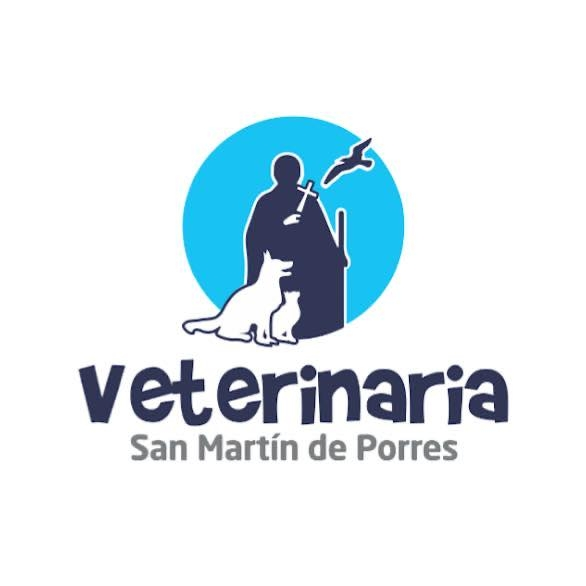

Por este medio yo , propietario de la mascota , de la raza , número de expediente , acepto las siguientes condiciones relacionadas con la atención de la emergencia para mi mascota en la Clínica Veterinaria San Martín de Porres.
1. Entiendo que en situaciones de emergencia y en ausencia de un médico veterinario disponible, mi mascota puede ser atendida por un asistente veterinario en la clínica.
2. Acepto que el asistente veterinario puede realizar valoraciones iniciales, tratamiento de emergencia y si es necesario dejar a mi mascota internada hasta la llegada de un médico veterinario durante sus horas laborales.
3. Reconozco que esta práctica se lleva a cabo para garantizar la atención inmediata y el bienestar de mi mascota en situaciones de urgencia.
4. Comprendo que el asistente veterinario hará todo lo posible por proporcionar cuidado y tratamiento adecuado, pero que la atención completa y diagnóstico definitivo se realizará cuando el médico veterinario esté disponible.
Estoy completamente claro que a pesar de los esfuerzos de los asistentes veterinarios, sé que mi mascota puede llegar a complicarse o fallecer en cualquier momento.
Hago constar que comprendo el proceso que se va a realizar y soy consciente que la atención del asistente veterinario no es la misma que proporciona un médico veterinario sin embargo, opto por dejar a mi mascota y acepto la atención del asistente de turno. Asimismo, asumo sus riesgos que se me han explicado, recomendado y aclarado todas las dudas que me hayan surgido al respecto, dejo a mi mascota por voluntad propia.
Soy consciente que la recuperación de mi mascota dependerá de su estado de salud en general y del cumplimiento de las indicaciones y cuidos posteriores a su egreso. Acepto la responsabilidad de seguir todas las recomendaciones para garantizar una recuperación exitosa. "Autorizo al equipo veterinario a tomar decisiones adicionales durante el procedimiento si identifican complicaciones imprevistas, siempre en el mejor interés de la salud de mi mascota"
Firmo en pleno uso de mis facultades mentales afirmando que he leído y comprendido todo lo descrito en este documento, a las horas, del día del mes del .